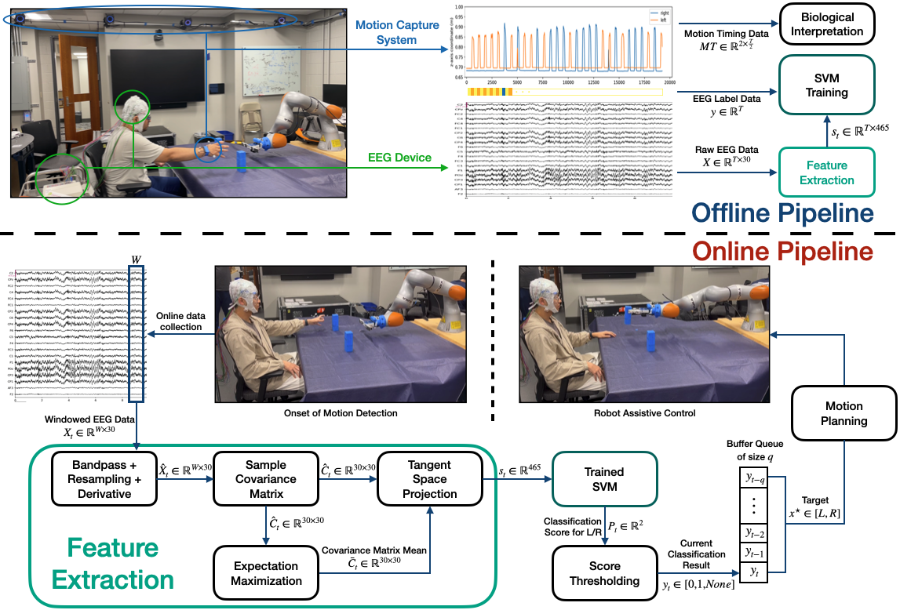

On the Feasibility of EEG-based Motor Intention Detection
for Real-Time Robot Assistive Control
ICRA 2023 (Under review)
- Ho Jin Choi*
- Satyajeet Das*
- Shaoting Peng*
- Ruzena Bajcsy
- Nadia Figueroa University of Pennsylvania
Abstract
This paper investigates the feasibility of using EEG-based intention detection for real-time robot assistive control, with a focus on motor intention prediction. The proposed approach involves two pipelines: i) an offline pipeline that collects and processes EEG data as well as motion data to train a classifier for motion intention prediction and biological interpretation, and ii) an online pipeline that uses the trained classifier to predict a human’s motor intention and couples it with a robot to perform assistive control. We adopt and modify the state-of-the-art EEG sample covariance matrix feature representation by using EEG signal derivatives and tangent space projection as features for an SVM classifier that can run in real-time. With this, Our system excels with the highest accuracy of 86.88% on recorded testing data, and it achieves an impressive 70% accuracy in real robot experiments. We show in a real-robot experiment that our online pipeline is able to detect the onset of motion purely from EEG signals and trigger a robot to perform an assistive task.
Video
Method
|  |
Our offline and online pipeline: The upper part is the offline pipeline, which first gathers the raw EEG data and the corresponding labels, as well as the motion data given by the motion capture system. Then the same feature extraction part is done, and the output features with labels are used to train the classifier. The motion data is used further for biological interpretation. The lower part is the online pipeline, which starts from the EEG data stream and extracts the tangent space projected covariance matrix as features for the classification. Some post-processing follows to ensure the rightness of the classification results. Finally, the robot moves to the classified object and hands it over to the human.